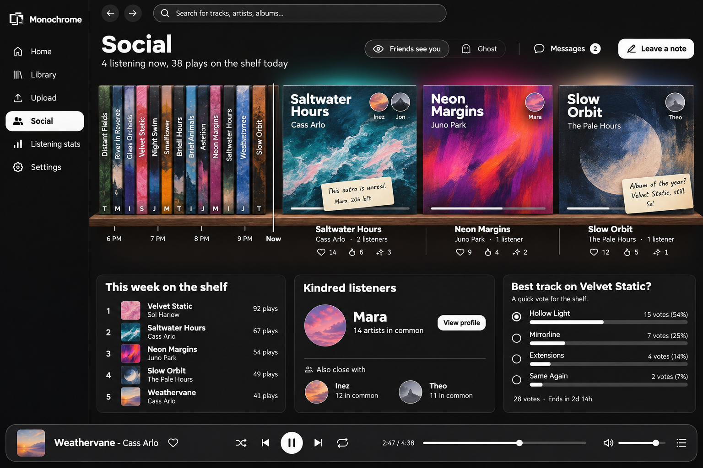
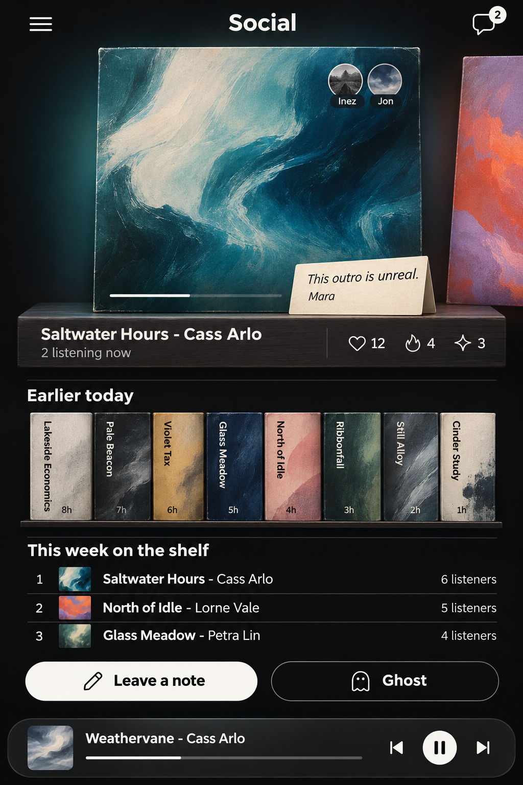
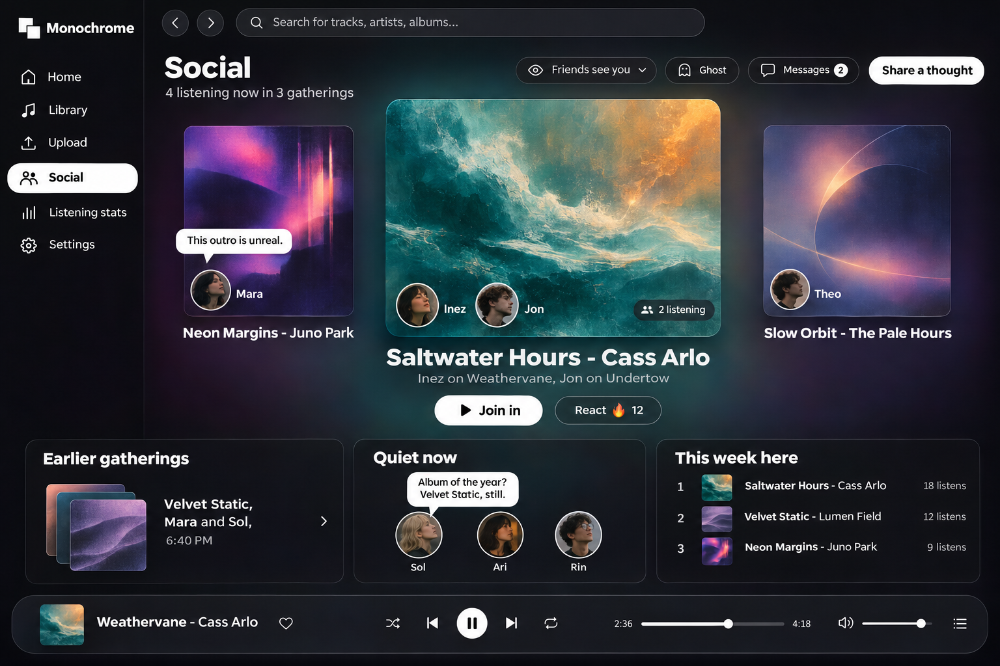
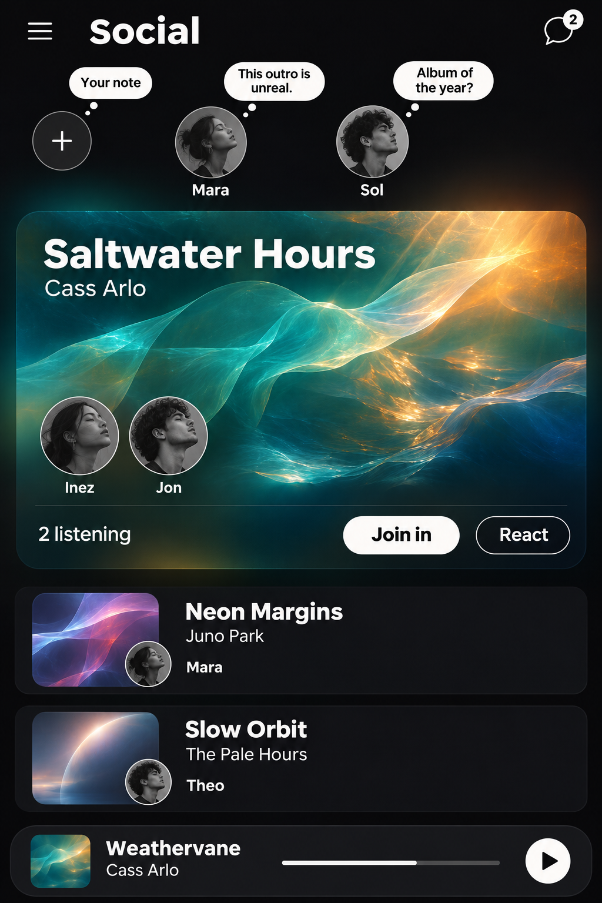
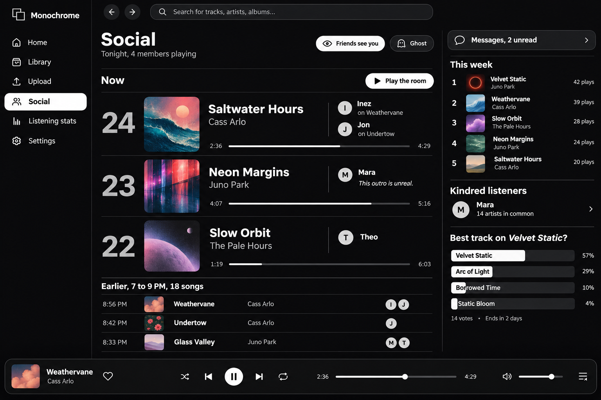
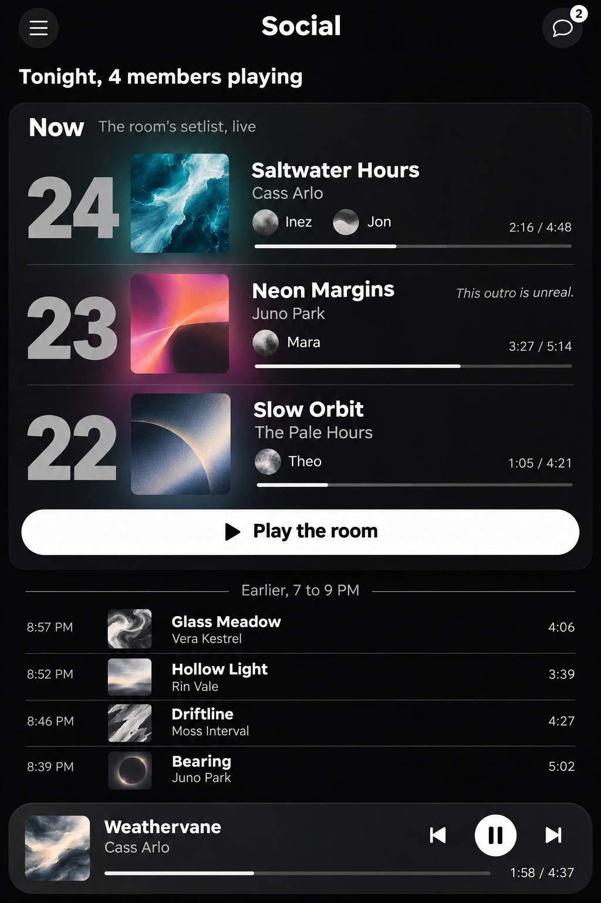

Three structures for the new Social page. All three keep Monochrome's existing look (near-black ground, Switzer display type, white pill controls, album art as the only colour); they differ in how the instance's listening is composed.
All names, songs and covers are invented sample data. Comps are generated images that show direction, not final pixels; the HTML sketch for each is the buildable composition. Pick on the decision page or just reply in chat.
The instance's whole day is one record shelf. Everything members played is filed in time as spines; what's playing right now is pulled out face-forward at the shelf's right end.


Header (title, live summary, visibility, Ghost, Messages, Leave a note), then a full-width shelf: hour-marked spines lead into a Now marker and the face-out sleeves. Below it, three quiet columns: this week on the shelf, kindred listeners, an open poll.
Each live listener gets a face-out sleeve with their avatar on its corner and live progress along its lower edge. Members on the same album share one stacked slot. A track change swaps the sleeve in place; when someone stops, their sleeve slides back into the shelf as the newest spine. Nothing reorders.
The spines are the history: today's plays by visible members, newest nearest Now. Hover or focus lifts and labels a spine; clicking pulls it out to play, save, react or open the album, artist or profile. Earlier days page to the left.
React from any sleeve or pulled-out spine (a quick row of six emoji, plus a full picker). Notes are shelf-talker cards tucked in front of the record they mention. Messages opens as a side drawer from the header, and every record offers "Message Mara about this".
One listener gets one large face-out beside their own spines, and the shelf shortens. If nobody is live, the newest record stays face-out, marked "Last played 40 min ago". A brand-new instance shows an empty shelf with the privacy choice and "Your listening starts the shelf".
The face-outs become a swipeable row of sleeves (one full, the next peeking), and the spines become a horizontal strip under "Earlier today". Everything else stacks below.
The page shows where the room is rather than who is online. Live listening is grouped by the music people share (same track, then album, then artist), not by person.


Header, then a wide floor of gatherings on one baseline: the largest sits in the centre, washed in its cover's colour. Below: earlier gatherings, a "quiet now" row (members who aren't listening, with their notes) and this week's chart.
Each gathering is one cover sized by how many people are in it, with their avatars seated along its lower edge and a caption saying who is on which track. "Join in" plays the same track in your own player. Gatherings keep stable positions, and people move between them instead of the floor reshuffling.
"Earlier gatherings" keeps the moments when people overlapped today. Solo listening feeds the weekly chart and the kindred-listener matches rather than a feed.
Notes are bubbles over a member's avatar wherever that member appears, the way Instagram Notes work. You can react to a gathering or to a person. Messages opens from the header and from avatar popovers.
One listener gets a single large centred gathering with "Join Inez". With nobody live, the last gathering shows dimmed beside the "quiet now" row. A new instance shows an empty floor and the privacy setup.
A notes row sits on top, the biggest gathering runs full width, and the others stack below it.
The instance's night reads as one running order: what's playing now heads the setlist, earlier songs follow in sets, and one button plays the room.


Two columns. The setlist holds a Now block of large rows with big running numbers, then hour-based set breaks and compact earlier rows. An encore column holds the Messages entry, this week's chart, kindred listeners and a poll.
Large rows show the cover, track, listeners, reactions and a live progress hairline. Members on a shared album merge into one row. "Play the room" queues everything currently playing.
Compact rows grouped by hour, with times. Notes appear as margin annotations under the row they're about.
Hovering or focusing any row reveals a reaction row and its actions. Messages is the first item in the encore column and opens a drawer.
A two-song setlist still reads as complete, and "Play the room" becomes "Listen with Mara". With nobody live, Now collapses to one line and the last set leads.
The most natural of the three: one column, a sticky "Play the room" button, and the encore content after Now.
It answers the brief's hardest requirement best: the instance reads as one collective object, not a grid of people. Liveness and history sit in the same structure, so a four-person instance at 2 a.m. still has a full, beautiful shelf instead of an empty state. Its signature (records pulled out face-forward, shelf-talker notes) belongs to music culture rather than to social-media templates. I'd borrow two things: the Setlist's "Play the room" as a shelf action ("Play what's face-out"), and Gatherings' rule that shared albums stack into one slot (already in the sketch). Its main risk, readable spines, is solvable with hover and focus labels plus keyboard paging. Pick a different one, or ask for a mix, and I'll adjust before building.